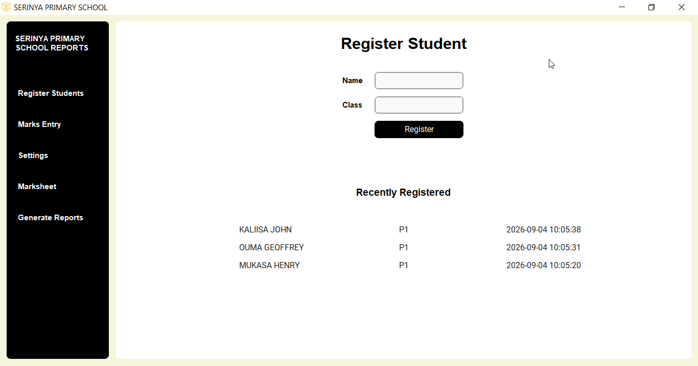
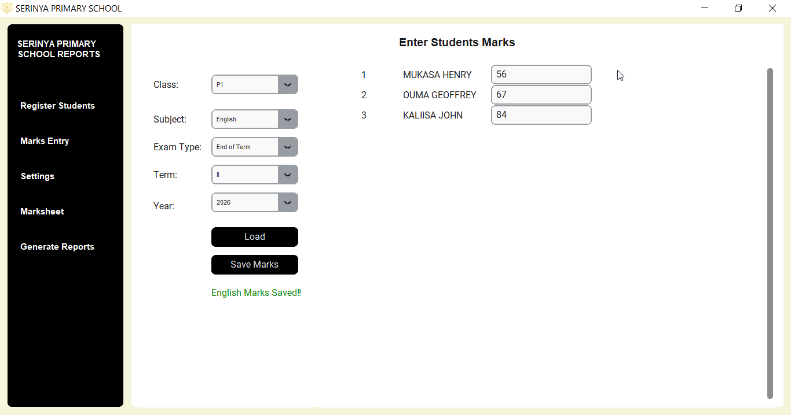
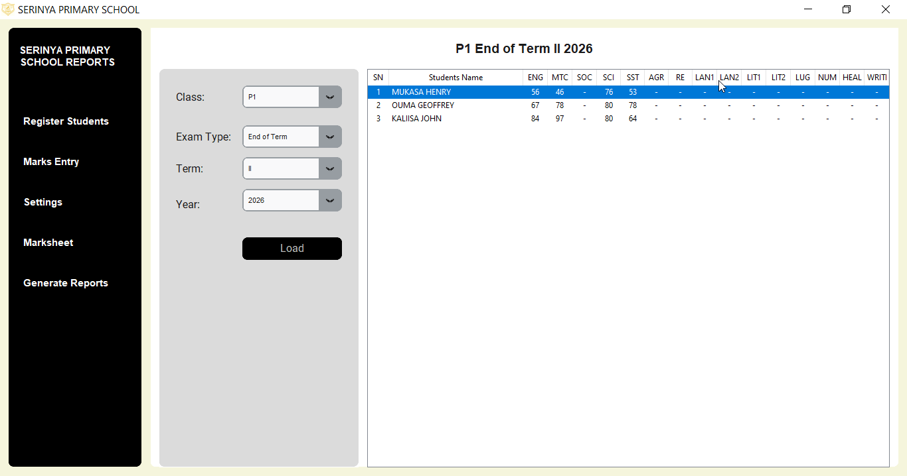
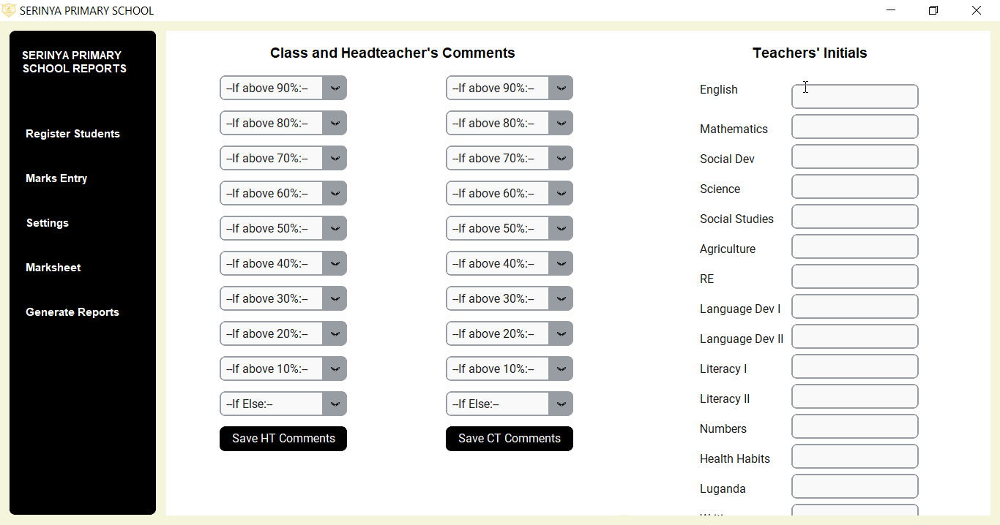
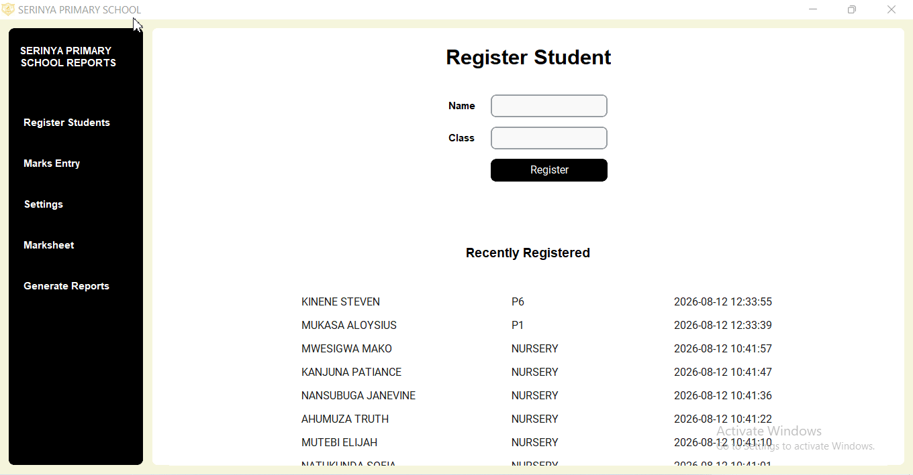
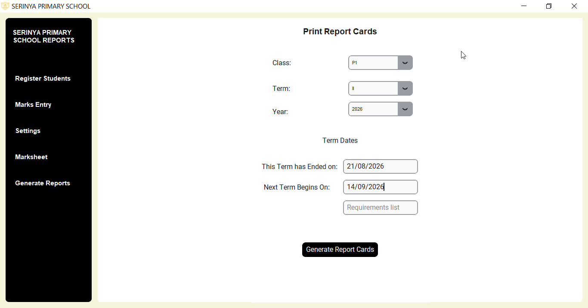

Shuleni Primary & Nursery School Report Cards
With Shuleni, primary and nursery schools easily generate report cards offline.
Available subjects for Nursery include: Mathematics, Local Langauages, English, Reading, Writing, Language Development I & II, Literacy I & II, Numbers, Health Habits, Social Development, Art, and Religious Education.

Completely Offline. No Internet Required
Shuleni report card software for primary and nursery schools works offline. Internet connectivity is not required.
Student Registration

Easily register pupils using the registration form. The form automatically converts any case to all caps, ensuring entry uniformity.
Just like for Shuleni for secondary schools, the 10 most recent registrations are displayed at the bottom of the form for quick access. A success message is helps to confirm the student has indeed been registered. The registered name can be accessed across the entire system.
Marks Entry

Enter pupils names by subject with Shuleni primary school report card software. Easily navigate to the next student with Enter, Arrow Down and Arrow Up keys.
Entered marks auto-populate on loading later. Entered marks can easily be edited and re-saved.
View Marksheet

The Marksheet feature enables the user to view entire results for a class in a selected exam.
The user selects class, exam type, term, and year. Results for all subjects in selected parameters are displayed. Students entire results highlighted on mouse-click.
User clicks on Print button to download results in PDF to a location of choice on their PC.
Comments and Initials

Set headteacher and classteacher comments from the Settings section. The teachers initials are also set from here. Headteachers and classteachers simply choose comments from a comments drop-down.
Headteacher and classteachers choose and set 10 different comments, each for a different level of achievement (Above 90% - Below 10%).
Shuleni Automation

Only subjects offered by the school appears on the report card (Some nursery schools offer extra subjects such as Agriculture, Reading, Writing). Changes in the number of subjects does not distort the layout of the report card.
Grades, remarks, comments, aggregates, are auto-calculated. Available marks are auto-populated in the Marks Entry fields. View Shuleni for secondary for additional automation.
Report Card Generation

Generate report cards for all classes (P1 - P7) and Baby Class - Top Class. Print report cards for the entire class with a click of a button.
Shuleni Pricing
Shuleni Report Card Software is a buy-once-use-forever software. Schools do not have to pay monthly or termly subscription fees.
Shuleni is avalailable at a one-time fee of UGX 200,000.
Try Shuleni today
Download the Shuleni Report Card Software Demo to findout how it can benefit your school.
Download DemoReady to get started??
Call or WhatsApp to get Shuleni setup for your school.